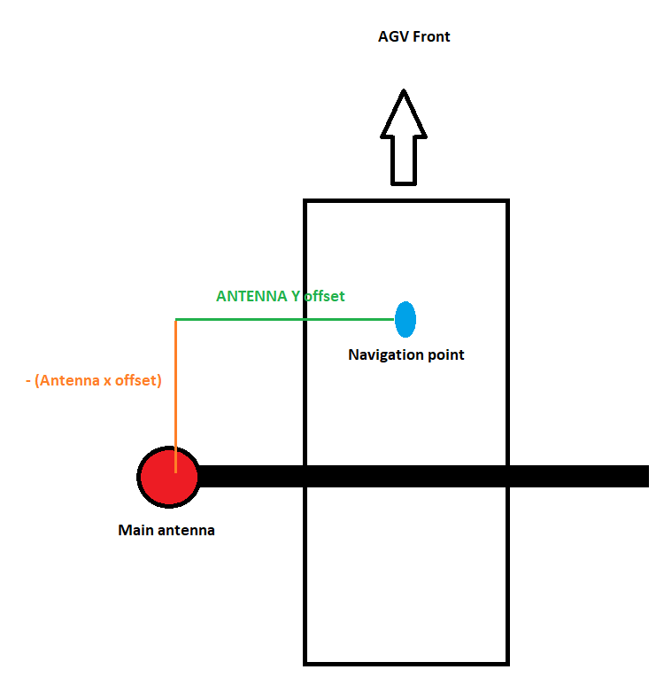

GPS Positioning
Updated 11.06.2024
Introduction and Prerequisites
In outdoor environments where there is no environment for reliable positioning with laser scanners, Navitrol can localize by using GPS signals instead. GPS units are able to provide a cm-accuracy position and a sub-degree accuracy heading if RTK fix is provided by a nearby base station.
The following requirements must be fulfilled to use GPS localization with Navitrol.
Hardware Requirements
Navitrol requires the following hardware for GPS positioning:
- Septentrio AsteRx SB ProDirect as GPS receiver or suitable replacement.
Note: It is required to have both main and auxiliary antennas.
-
Septentrio AsteRx SB ProConnect as the base station. Details can be found in supplier webpage: link
-
An external IMU supported by Navitrol. Please refer to "Navitrol-IMU Support" document for details.
Physical Requirements
To get an accurate heading from GPS receivers, the main and auxiliary antennas need to be as far away from each other as possible. Furthermore, they need to be installed to the vehicle such that the line between them is either parallel or perpendicular to the driving direction of the vehicle. See Section 2 for a graphical representation.
For this reason, it is required to have sufficient space on the AGV to mount the antennas. Recommended distance is 1 meter, and the minimum distance is 70 cm. Please note that heading estimation performance will be worse as the distance gets shorter.
Software Requirements
GPS positioning is built on the sensor fusion algorithm. Therefore, sensor fusion should be enabled and running for it to work. Please refer to following two documents for instructions:
-
Navitrol - Sensor Fusion
-
Navitrol - IMU Support
Furthermore, for environment generation when using GPS positioning, NavithorTools version 4.07.00 or higher needs to be used.
Configuring the GPS Receiver
Follow the instructions in this section to configure the GPS receiver. Most of the section contains references directly to Septentrio material.
Step 1: Define static IP addresses for both the base station and rover unit. Instructions are available here: link
Note down the address of the receiver, as it is needed in Navitrol parameters later.
Step 2: Define the RTK correction stream from base station to rover. Instructions are available here: link
Step 3: Define an NMEA output stream from the rover. The stream should contain RBP and HRP messages and have 50 milliseconds sending interval. Instructions are available here (video title is mosaic receiver, but configuration is the same): youtu.be/ArtePkC58-o
Note down the port number of the stream, which will be needed in Navitrol parameters later on.
Step 4: After installing the two antennas on the AGV, define the heading offset according to antenna position. To do this, go to GNSS -> Attitude -> Heading offset in the web interface.
In the Figure below, graphical examples can be found. In all figures, the top side is the front of the AGV.

Configuring the Navitrol Parameters
Navitrol parameters related to GPS navigation are presented in this section, with recommended values.
AGV Specific GPS Parameters
These parameters will have different values according to configuration. Therefore, they should be set separately for each AGV.
| Parameter | Description |
|---|---|
| S,gps_receiver_ip, 192.168.0.0 | IP address of the gps receiver |
| I,gps_receiver_port, 0 | Ethernet port number of the NMEA stream |
Set the above two parameters according to IP address and port number defined in Section 2.
| Parameter | Description |
|---|---|
| F,gps_main_antenna_offset_x, 0.000 | X position of main antenna in the vehicle frame |
| F,gps_main_antenna_offset_y, 0.000 | Y position of main antenna in the vehicle frame |
| F,gps_main_antenna_offset_z, 0.000 | Z position of main antenna in the vehicle frame |
For the offset parameters above, x and y axes are defined in the vehicle frame. For example, please see the figure below:

In such a configuration, the y offset parameter would be positive, and x offset parameter would be negative. The offset in z direction is equal to the vertical distance between the antenna and the vehicle axis.
Generic GPS Parameters
These parameters should be configured only once. Ideally, same set of parameters will work in all situations, but they might be tuned for better performance.
| Parameter | Description |
|---|---|
| I, gps_receiver_type, 1 | GPS receiver to be used in localization: 0 - Disable GPS based localization 1 - Septentrio AsteRxProDirect. |
| I, gps_teach_enabled, 1 | Use the GPS data for teach files: 0 - No 1 - Yes. |
| I, gps_teach_interval_ms, 5000 | Save GPS poses with this interval when teaching. |
| I, gps_initialize_posion, 1 | Enable position initialization from GPS: 0 - No 1- Yes. |
| I, gps_disable_laser_corr, 1 | Disable laser updates in sensor fusion when gps fix is available: 0 - Apply laser corrections 1 - Prevent laser corrections. |
| I, gps_disabled_area_mode, 0 | How GPS behaves in the GPS disabled areas: 0 - Completely disable GPS 1 - Use GPS position but not heading. |
| I, sf_gps_limit_corr, 1 | Filter the maximum gps correction in each cycle: 0 - Don't limit 1 - Limit. |
| F sf_gps_h_max_corr_deg, 0.3 | Maximum heading correction per cycle by gps in degrees. Recommended to have same value as loc_h_max_corr_deg. Only used if sf_gps_limit_corr is 1. |
| F, sf_gps_xy_max_corr, 0.01 | Maximum xy correction per cycle by gps in meters. Recommended to have same value as loc_xy_max_corr. Only used if sf_gps_limit_corr is 1 |
Note: If the gps_teach_enabled parameter is set to 1 as above, the AGV will initialize the position when the following conditions are all set:
-
Position is not already initialized.
-
Position is not being actively requested to initialize, such as setting the position from Navitrol Monitor.
-
RTK fix is available from the GPS receiver.
It is recommended to set this parameter to 1, so that position initialization is possible outside of the laser navigation area as well.
Other Navitrol Parameters
Parameters in this group are not directly related to GPS and in many cases already exist in your parameters file. They should be verified to have the correct settings before GPS navigation is used.
-
All parameters related to sensor fusion and IMU. Please see the relevant documents for more details.
-
I, teach_file_format, 5 # Format of the saved teach files. GPS navigation only works with format 5 and higher.
Using GPS Positioning
Once the parameters are correctly set, using GPS positioning is very similar to laser scanner-based navigation with Navitrol. The AGV will localize with GPS signals whenever an RTK fix is available, and automatically switch to scanner, IMU and odometry based localization when it is not. Follow the steps below to localize with the GPS positioning.
Teaching the Environment
Teaching with GPS works the same as teaching with laser scanners. Start Navitrol, ensure that WARNING_NO_GPS_FIX warning is not set, and teach the environment as usual.
Matching Environment to GPS coordinates
The GPS coordinates will be automatically included in the teach file. Import the teach file to NavithorTools as usual. In the matching phase, recorded GPS points should be matched to the laser scanner points, such that they give the same position and heading output when the AGV is at the same location. Detailed instructions can be found in the "Navithor Tools User Instructions" document's "Correct Global Coordinates" chapter. For most of the cases, clicking the "Correct Global Coordinates" button is enough to do the matching. The matching can be verified by checking that the base station is approximately at the origin of the resulting map, and the top side of the map corresponds to North.
Environment and Route Generation
Generating routes and environment points with GPS navigation has no difference from usual.
Defining GPS Disabled Zones
If desired, it is possible to define zones in Navithor Tools where GPS is disabled. In such zones, GPS signals will not be used even if high quality RTK fix is available. This is mostly beneficial for cases where there is a stable environment around the AGV such that laser scanner can provide a reliable navigation, such as for docking. Please refer to Navithor Tools User Instructions for defining them.
Localization in the Environment
Once the environment is uploaded to Navitrol, the following data will be utilized for localization.
AGV within GPS Disabled Zone:
-
GPS data will always be ignored by default. It is possible to change this behavior so that the position from gps will still be utilized but the heading will be ignored by changing "gps_disabled_area_mode" parameter to 1.
-
If laser scanner is matching an environment, it will be used to position the AGV.
-
If there is no stable environment, localization will be performed by fusion of IMU and odometry for some distance (defined by sf_conf_max_dist parameter) before AGV stops.
AGV outside of GPS Disabled Zone:
-
If GPS data is available with RTK fix, it will be used for localization.
-
Positioning from the laser scanner will be ignored when GPS with RTK fix is available.
-
If GPS with RTK fix is not available, but the laser scanner is matching an environment, it will be used to position the AGV.
-
If there is neither GPS signal nor stable environment available, localization will be performed by fusion of IMU and odometry for some distance (defined by sf_conf_max_dist parameter) before AGV stops.
Errors and Troubleshooting
Navitrol has two possible errors that are raised when using GPS positioning, to indicate there are unexpected problems. This section explains possible causes and instructions to fix them.
ERROR_GPS_NO_CONNECTION
This error is raised when there is no connection between Navitrol and GPS receiver. Possible causes include:
-
IP address or port number of the GPS receiver does not match the one in parameters.
-
Ethernet cable between Navitrol IPC and receiver is not properly connected.
WARNING_NO_GPS_FIX
This warning is raised when there is no RTK fix received by the GPS receiver. Possible causes are below:
-
RTK fix is not available in the receiver side. Make sure the web interface of the receiver indicates the positioning mode is "RTK fixed". If it is anything else (RTK Float, differential, standalone), this indicates the problem is not related to Navitrol, but RTK fix is not available in the first place. Here are possible fixes:
-
First, please check that "corrections" icon is indicating the corrections are correctly being sent from base station and received by the receiver. This video shows it in more detail youtu.be/UVUVXpA8rB4. If the corrections are not available, try moving the AGV into a more open position and make sure the signal quality indicated on the front page are high.
-
If the GPS signal quality indicator is high, corrections are being received, there is no interference, but the mode is still not RTK fixed, one solution is to wait for a while. The very first time may take up to 15 minutes until RTK fixes become available (only once, not on subsequent startups).
-
-
If RTK fix is available on the receiver side but Navitrol is still raising this warning, these are the possible causes:
-
Main antenna has high quality signals but the auxiliary antenna does not, so only position corrections are received but not heading ones. This can be verified by checking that both antennas have high signal quality from the main page of the receiver web interface.
-
NMEA stream is not properly defined, so Navitrol is not receiving the stream. Check the stream includes both RBP and HRP messages. Also, make sure that no other stream is defined using the same port number. In addition, make sure that the stream is visible when Navitrol is running on the front page of the web interface, in the "Data Streams" section.
-
Sometimes a power cycle is needed to restore the stream. So try restarting the receiver and Navitrol if the above does not work.
-
If you encounter an issue not listed here or the above solutions did not solve your problem, please take a log and contact Navitec Systems.